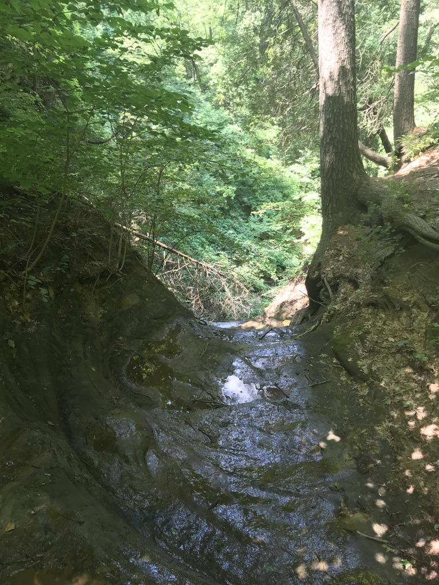
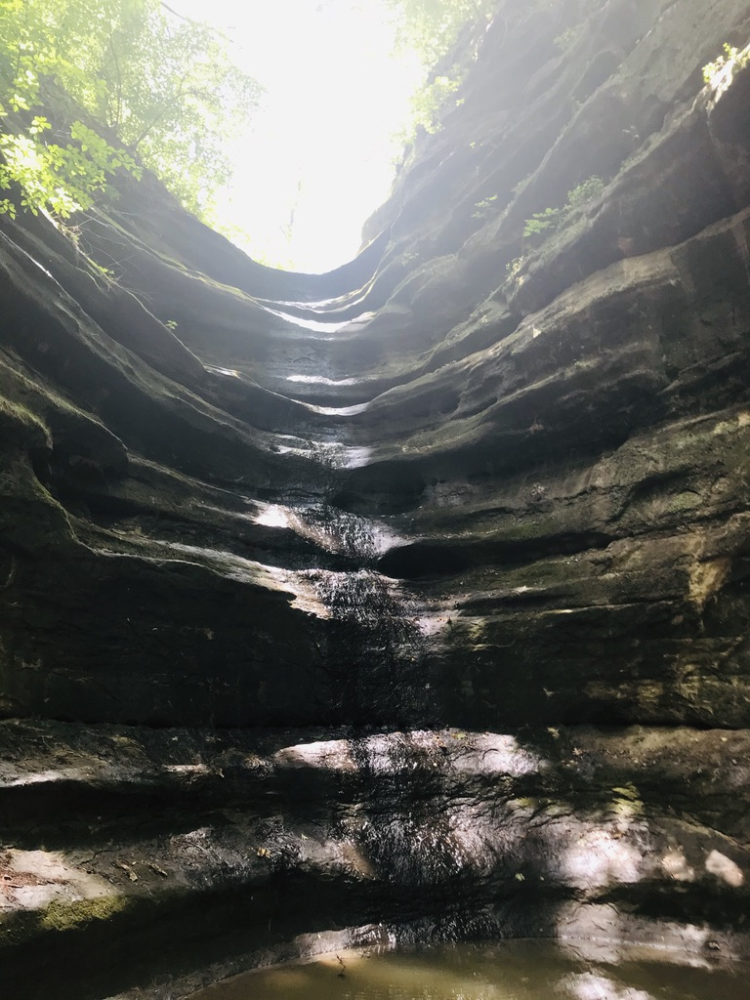
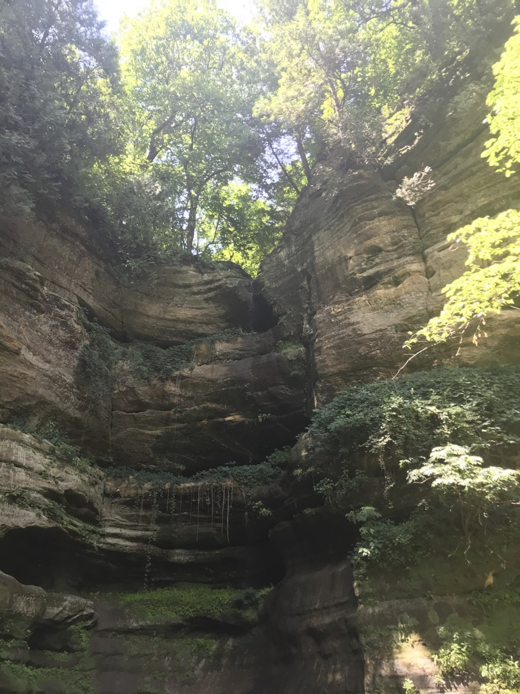

Starved rock was an amazing trip. It was one of the few trips where I went with my friends instead of my family, and we had a blast. We explored everywhere we could, and I mean everywhere. Near the end of our trip we even got a bit lost, not knowing how we should get back. So what we did was walk around a bit until we found a pathish looking area, and just kept going down it. Eventually it led us to a 70 degree slope, which for most people would be the point to turn back. Not us. We took turns one by one sliding down this little slope, and just kept going. We kept going until we found ourselves high up on the cliff face closer to the road leading back into starved rock. Now we knew where we were going and just started walking towards where we thought our cars were.
1 / 4

Wet Rocks
2 / 4

Empty Water Fall
3 / 4

Green Groove
4 / 4

Rocks on the Wall